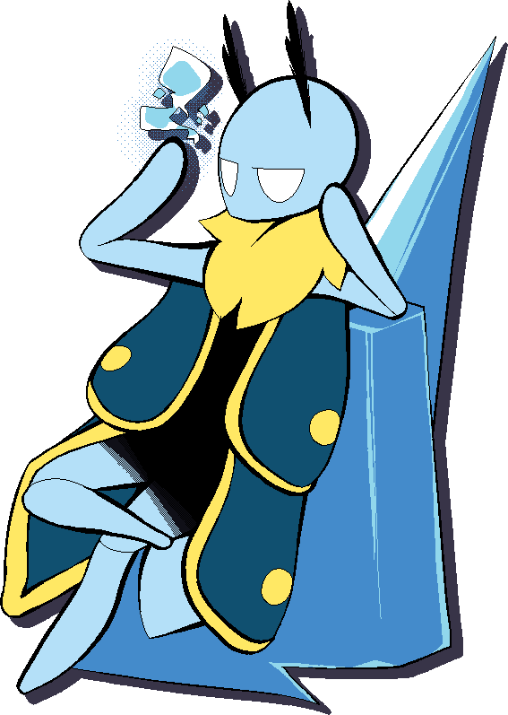

5A
A
{kind=link}
| Damage | Guard | Attribute |
|---|---|---|
| 26 | mid | BODY |
Icicly swipe.
Far range for a light normal, but it’s also relatively slow.
Whiffs on distant crouching opponents unless they’re tall enough.
5B
B
{kind=link}
| Damage | Guard | Attribute |
|---|---|---|
| 40 | mid | BODY |
Kicks two icicles forward while bending backwards.
Leif’s farthest-reaching normal.
5C
C
{kind=link}
| Damage | Guard | Attribute |
|---|---|---|
| 65 | mid | BODY |
Spikes icicles forward. Just a bit less range than 5B.
Charged version FREEZEs.
2A
A
{kind=link}
| Damage | Guard | Attribute |
|---|---|---|
| 20 | low | FOOT |
A low kick. Less range than 5A, but faster.
2B
B

| Damage | Guard | Attribute |
|---|---|---|
| 41 | low | FOOT |
Stabs icicle forwards.
2C
C
{kind=link}
| Damage | Guard | Attribute |
|---|---|---|
| 73 | low | FOOT |
Leif stomps the ground, creating a large icicle.
Has slow startup, making it good for frametraps, but is otherwise slightly difficult to use.
j.A
A while airborne
{kind=link}
| Damage | Guard | Attribute |
|---|---|---|
| 30 | high | DIVE |
Kicks an icicle forwards. Has the longest horizontal range of Leif’s jump normals.
j.B
B while airborne
{kind=link}
| Damage | Guard | Attribute |
|---|---|---|
| 50 | high | DIVE |
Kicks an icicle downwards.
j.C
C while airborne

| Damage | Guard | Attribute |
|---|---|---|
| 70 | high | DIVE |
Attacks all around with a spread of icicles. Charged version LAUNCHes the opponent higher with significant hitstun.
5AA
A after 5A

| Damage | Guard | Attribute |
|---|---|---|
| 33 | mid | CHEST |
Poses and fires another short-range icicle.
5AAA
A after 5AA

| Damage | Guard | Attribute |
|---|---|---|
| 44 | mid | BODY |
-
5BB
B after 5B

| Damage | Guard | Attribute |
|---|---|---|
| 48 | mid | BODY |
Leif kicks forward another pair of icicles.
5CC
C after 5C

| Damage | Guard | Attribute |
|---|---|---|
| 80 | mid | BODY |
Leif spikes up an icicle at the opponent’s location (up to a certain distance), pushing them further away.
3B
B

| Damage | Guard | Attribute |
|---|---|---|
| 56 | mid | BODY |
Leif hovers upside down and kicks at the opponent twice, advancing slightly with each kick.
Goes over low-aiming moves.
6B
B
{kind=link}
| Damage | Guard | Attribute |
|---|---|---|
| 47 | high | BODY |
Steps forward with a spinning overhead kick.
3C
C
{kind=link}
| Damage | Guard | Attribute |
|---|---|---|
| 58 | mid | BODY |
Kicks up a tall icicle.
Good anti-air move, but not much horizontal range.
Upper body is DIVE-invulnerable.
B while airborne

| Damage | Guard | Attribute |
|---|---|---|
| 44 | high | DIVE |
Leif kicks an icicle straight downwards.
Bounces off the opponent.
66B
B while dashing

| Damage | Guard | Attribute |
|---|---|---|
| 50 | mid | BODY |
Slides across the ground on an icicle.
66C
C while dashing
| Damage | Guard | Attribute |
|---|---|---|
| 70 | mid | BODY |
Leif jumps forward and spikes out icicles in all directions.
Slow startup, high hitstun.
Ground throw
A+D or A+D

| Damage | Guard |
|---|---|
| 105 | grab |
Leif grabs the opponent and hits them with a large icicle. Doesn’t FREEZE if the opponent has already been frozen in the same combo.
A+D or A+D, hold

| Damage | Guard |
|---|---|
| 144 | grab |
Leif grabs the opponent, then slams them on the ground next to him.
Doesn’t use your FREEZE, and has lower initial proration, so it can lead to higher-damage combo conversions with resources.
Air throw
A+D or A+D while airborne

| Damage | Guard |
|---|---|
| 115 | grab |
Leif grabs the opponent and freezes them, letting them fall to the ground. If the opponent has already been frozen in the same combo, it won’t FREEZE.
Frost
S

| Cost |
|---|
 1 1 |
Leif creates a frosty cloud that lingers for a few seconds.
If you pass an Ice Shard (A) or Icefall (A) through it, the move will power up, consuming the cloud.
In Active Flow, it can be whiff-canceled into other Skills.
Ice Shard
A

| Cost | Damage | Guard | Attribute |
|---|---|---|---|
| 2 | 50 | all | CHEST |
Leif creates an icicle that launches straight forwards, or diagonally downwards in the air.
Using the air version bounces you backwards. The charged version will slow your vertical momentum until the bounce.
If it passes through a Frost cloud, the icicle will be fortified and gain an extra hit of unscaled damage that increases hitstun and blockstun.
Fortified icicles also travel faster and redirect towards the opponent’s location.
Charged version is stationary, hits three times, and is DASH- and able. Used mostly as okizeme or a greedy pressure reset.
Fortified charged version is still stationary, but increases in range with an extra final hit that deals extra hitstun/blockstun.
In Active Flow, you can chain uncharged Ice Shard into Icefall (shortcut: A).
Icefall
A

| Cost | Damage | Guard | Attribute |
|---|---|---|---|
| 2 | 50 | all | DIVE |
Leif shoots an icicle diagonally downwards.
When charged, the icicle ricochets off the ground. The GROUNDBOUNCE is very helpful in combos, or from converting off stray hits in neutral. The charged version can only be done on the ground.
When passed through a Frost cloud, the icicle will be fortified and gain an extra hit of unscaled damage that increases hitstun and blockstun.
A fortified charged Icefall will redirect to the opponent’s location.
In the air, it acts similarly to Ice Shard, but pauses your aerial momentum briefly rather than bouncing back.
The icicle accelerates after a delay.
In Active Flow, you can chain uncharged Icefall into Ice Shard (shortcut: A).
Arctic Geyser
B
{kind=link}
| Cost | Damage | Guard | Attribute |
|---|---|---|---|
| 3 | 64 | all | BODY |
Leif stomps on the ground and creates an icy splash.
Safe, but minus on block.
The air version has no extra recovery if you land after Leif stomps, making it very plus with the correct timing.
Air version WALLBOUNCEs if you’re close to the corner.
Charged version can only be done on the ground, and sends ice shards across the entire screen that hit low.
Zero Point
B
{kind=link}
| Cost | Damage | Guard | Attribute |
|---|---|---|---|
| 3 | 100 | grab | HEAD |
Leif leaps forward and tries to grab the opponent. Only connects on aerial and standing opponents.
On connect, he’ll slam them into the ground, launching them back up with an icicle.
Can only combo afterwards on raw connect, or with Chain Cancel.
If you Chain Cancel the startup, you’ll retain the forward momentum.
| Cost | Damage | Guard | Attribute |
|---|---|---|---|
| 3 | 64 | all | BODY |
Leif stomps on the ground and creates an icy splash.
Safe, but minus on block.
The air version has no extra recovery if you land after Leif stomps, making it very plus with the correct timing.
Air version WALLBOUNCEs if you’re close to the corner.
Charged version can only be done on the ground, and sends ice shards across the entire screen that hit low.
Glacial Ascension
A

| Cost | Damage | Guard | Attribute |
|---|---|---|---|
| 3 | 82 | mid | BODY |
Leif spikes up a large icicle about half-screen away.
Good as a pre-emptive anti-air, or as a long-range poke.
It doesn’t go past the edge of the screen in the corner.
Bubble Shield
B
{kind=link}
| Cost | Damage | Guard | Attribute |
|---|---|---|---|
| 5 | 151 | mid | BODY |
Leif encloses himself in a barrier, knocking nearby opponents away. Hits on both sides, but not much horizontal or vertical range.
You can also use it to reflect projectiles.
It can be useful as an expensive, but high-damage combo ender.
236C
C

| Cost | Damage | Guard | Attribute |
|---|---|---|---|
 100 100 | 200 | all | BODY |
Leif extends an icicle all the way across the screen. On hit, the opponent will get splintered by more shards of ice once they hit the corner.
If you’re close enough to the corner, you can actually continue the combo.
If powered up with a Frost cloud, it will WALLSPLAT, allowing for stronger combos and conversions from full-screen distance.
Recovers 4 on hit.
Ice Rain
C

| Cost | Damage | Guard | Attribute |
|---|---|---|---|
| 100 | 160 | all | DIVE |
Leif marks the opponent. After a short period of time, several icicles rapidly rain down from the sky at the opponent’s location.
The marker goes away if Leif is hit before the icicles start falling. However, the icicles will not stop raining if Leif is hit afterwards.
Hailstorm
C while airborne

| Cost | Damage | Guard | Attribute |
|---|---|---|---|
| 100 | 200 | all | DIVE |
Leif creates a small hailstorm in an area around himself.
Slightly plus on block.
If powered up with a Frost cloud, it will , giving extra frame-advantage.
Recovers 2 on hit.
Frozen Drill
C

| Cost | Damage | Guard | Attribute |
|---|---|---|---|
| 100 | 220 | mid | BODY |
Leif creates a tall icicle, hitting the opponent multiple times quickly. The final hit keeps the opponent in the air a long time, allowing you to switch sides.
If powered up with a Frost cloud, the final hit will no longer be an ENDER, allowing followup combos.
Recovers 2 on hit.
Northern Wind
S

| Cost | Damage | Guard | Attribute |
|---|---|---|---|
| 200 | - | mid | BODY |
-
Recovers 8 on hit.